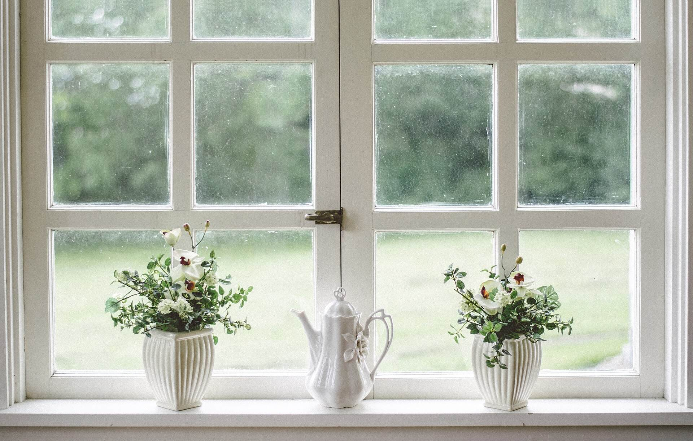

散歩の途中にひと休みできて、ほっとしました。ゆったりした時間が流れていました。(創作のイメージ例)
このページの口コミは、サイトの完成イメージをご覧いただくための創作文(イメージ例)です。実際のお客様の声ではありません。
口コミ(イメージ例)
友人とおしゃべりをして、気持ちが軽くなりました。また立ち寄りたいです。(創作のイメージ例)
ひとりでも気兼ねなく、のんびり過ごせました。静かに過ごしたい日によさそうです。(創作のイメージ例)

掲載写真はイメージ素材です(実際の店舗・商品とは異なります)。写真は各地のイメージ素材で、店内ではありません。
実際のご感想は
実際のお客様の声は、InstagramやGoogleマップでご確認ください。
ご質問はお気軽にお電話ください。
電話する 055-941-5959